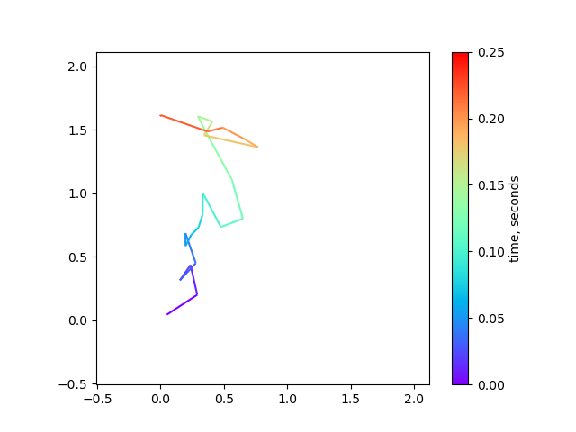

Daniel's blog on data visualization, image processing, etc.
With the help of ChatGPT, finding information has become easier, resulting in a wealth of tips and tricks that can be difficult to manage. I primarily use Python, focusing on data visualization and image analysis, and plan to regularly update this blog with useful information for others. Additionally, this blog serves as an opportunity for me to practice using Emacs org-mode for writing and organizing what I learn in one place.
The stylesheet for this document is taken from Nicolas Rougier's https://github.com/rougier/notebook-mode. I'm using his nano-theme for my Emacs.
1. Emulating an argmax() function
You can emulate argmax() function (returns the index of the maximum value in a sequence) in Python by doing:
mylist = [1,7,3,1,5] res = max(enumerate(mylist), key=lambda x: x[1]) # needed for inline org-mode return res
(1, 7)
This returns the argmax and the max value from a list. I occasionally use this when I don't need to use NumPy for a simple script.
2. Plotting multi-colored line in matplotlib
When plotting the 2D trajectory of diffusing particles or diagnosing drift in microscopy timelapse data, it can be helpful to use color to indicate time. This can be achieved using the matplotlib.collections.LineCollection object. In this example, we'll simulate 2D diffusion and plot the trajectory of a single particle over time.
from matplotlib.collections import LineCollection from matplotlib.colors import Normalize import matplotlib.pyplot as plt import numpy as np dt = 0.010 D_coef = 1.0 Nt = 25 # simulate diffusion steps xsteps = np.random.randn(Nt) * np.sqrt(2 * D_coef * dt) ysteps = np.random.randn(Nt) * np.sqrt(2 * D_coef * dt) # construct a (cumulative) trajectory from the steps x = np.cumsum(xsteps) y = np.cumsum(ysteps) # assemble into Nt x 2 array xy = np.column_stack([x,y]) # create a list of line segments from xy[n, :] to xy[n+1, :] # For N points, there will be N-1 line segments connecting between points # use the 'np.newaxis = None' trick to create a new axis (at axis=1) # this makes Nt-1 x 2 x 2 array to represent line segments 'from' -> 'to' segments = np.concatenate( [xy[:-1,None,:], xy[1:,None,:]], axis=1 ) # create the line segments to be drawn lc = LineCollection( segments, cmap="rainbow", norm=Normalize(0,Nt * dt), linewidths=1.5 ) # this sets the data array for each segment # each data point gets mapped to a color by the 'cmap' and 'norm' lc.set_array(np.arange(Nt) * dt) # plot the data fig, ax = plt.subplots() ax.add_collection(lc) # set axis limit axlim_min = min(x.min(), y.min()) - 0.5 axlim_max = max(x.max(), y.max()) + 0.5 ax.set_xlim((axlim_min, axlim_max)) ax.set_ylim((axlim_min, axlim_max)) ax.set_aspect("equal") fig.colorbar(lc, ax=ax, label="time, seconds") fig.savefig("./images/simulated_diffusion.png") plt.close(fig) # needed for inline org-mode return "./images/simulated_diffusion.png"
